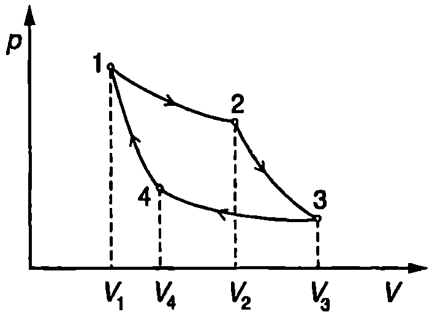
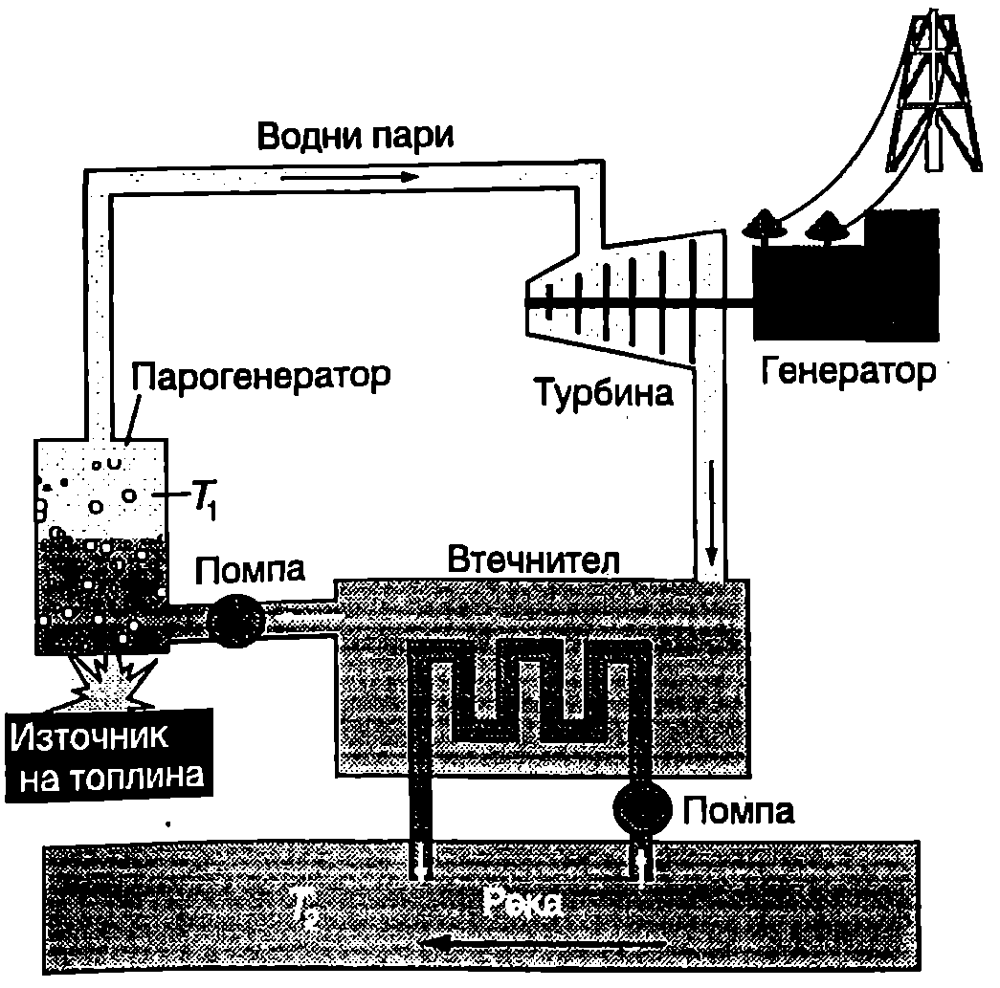
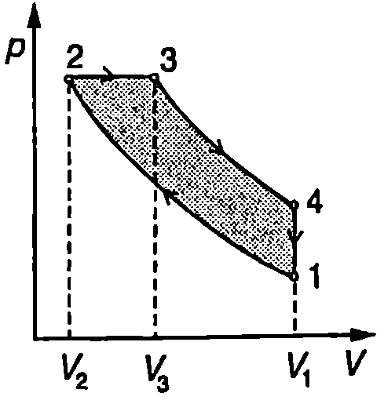

Коефициент на полезно действие
Топлинната машина е периодично действащо устройство, което преобразува получена от околната среда топлина в работа. Схематично (Фиг. \ref{fig:36.1}) топлинната машина може да се представи като съставена от топлинен резервоар с висока температура (нагревател), работно тяло, извършващо кръгов процес, и втори топлинен резервоар с по-ниска температура (охладител). За един цикъл работното тяло получава количество топлина от нагревателя, извършва полезна механична работа и отдава количество топлина на охладителя. За по-голяма нагледност при анализа на топлинните машини ще смятаме, че количеството топлина винаги има положителна стойност, а в енергетичния баланс влиза със знак плюс или минус в зависимост от това дали работното тяло приема или отдава топлина. Когато направи един пълен цикъл, работното тяло се връща в изходното си състояние, т.е. вътрешната му енергия достига началната си стойност. Тогава съгласно с първия принцип на термодинамиката механичната работа е
По определение коефициент на полезно действие (КПД) на топлинна машина се нарича отношението на полезната механична работа към полученото количество топлина

Принципна схема на топлинна машина.
`Фиг. 36.1`
Заместваме работата от уравнение \eqref{eq:36.1} в \eqref{eq:36.2} и изразяваме КПД на топлинната машина чрез полученото от нагревателя количество топлина и отдаденото на охладителя количество топлина
Цикъл на Карно
Особено важно място в термодинамиката заема кръговият процес, съставен от два равновесни изотермни процеса и два равновесни адиабатни процеса. Топлинната машина, която използва този идеализиран цикъл, е била количествено анализирана за пръв път от Карно. Затова в негова чест цикълът е наречен цикъл на Карно, а самата машина — машина на Карно.
За да опростим анализа, ще разгледаме топлинна машина на Карно, чието работно тяло е цилиндър с бутало, който съдържа mol идеален газ. Отначало цилиндърът се привежда в топлинен контакт с нагревателя и газът се разширява изотермно при температура от състояние 1 до състояние 2 (Фиг. \ref{fig:36.2}). Всички процеси ще смятаме за равновесни. След това се прекъсва топлинният контакт с нагревателя и газът продължава да се разширява адиабатно, при което се охлажда. Адиабатният процес се прекратява, когато температурата на газа се изравни с температурата на охладителя (състояние 3 на -диаграмата). После цилиндърът се поставя в топлинен контакт с охладителя и следва процес на изотермно свиване, докато се достигне състояние 4 (Фиг. \ref{fig:36.2}), което лежи на една и съща адиабата с началното състояние 1. Накрая цилиндърът се маха от охладителя и чрез адиабатно свиване газът се връща в началното състояние 1.

Цикъл на Карно.
`Фиг. 36.2`
Ще определим КПД на машината на Карно. При изотермното разширение газът получава от нагревателя количество топлина (вж. пример 30.1 на стр. 163), а при изотермното свиване отдава на охладителя количество топлина където и са обемите на газа съответно в състояние 1, 2, 3 и 4. При адиабатните процеси газът не обменя топлина с околната среда. Съгласно с формула \eqref{eq:36.3} коефициентът на полезно действие е
Записваме уравнението на Поасон за двата равновесни адиабатни процеса (вж. пример 31.4 на стр.172):
Делим почленно левите и десните страни на двете уравнения и получаваме
Тъй като отношенията на обемите са равни, логаритмите на тези отношения също са равни и формула \eqref{eq:36.4} добива вида
Теореми на Карно
Доказва се, че полученият резултат \eqref{eq:36.5} за КПД на машината на Карно остава в сила и в случаите, когато работното тяло не е
идеален газ. Първата теорема на Карно гласи:
КПД на топлинна машина, работеща по цикъла на Карно, не зависи от вида на работното вещество. Той се определя единствено от температурите на нагревателя и на охладителя и се изразява с формула \eqref{eq:36.5.}
Възможно ли е да се конструира топлинна машина, която да работи при същите температури на нагревателя и охладителя, както машината на Карно, но да има по-голям КПД? Отговор на този въпрос дава втората теорема на Карно:
Сред всички възможни топлинни машини, които работят при дадени температури на нагревателя и охладителя, най-голям коефициент на полезно действие има машината на Карно.
Теоремите на Карно са една от възможните (еквивалентни) формулировки на втория принцип на термодинамиката, на които ще се спрем по-нататък.
Цикълът на Карно е идеализиран никоя реална топлинна машина не работи по този цикъл. Неговото принципно значение се определя от това, че той задава горната граница на коефициента на полезно действие на топлинните машини. Ако са фиксирани температурите на нагревателя и на охладителя, никакви конструкционни и технологични подобрения не могат да повишат КПД на една реална топлинна машина над теоретичната граница, определена от формула \eqref{eq:36.5}.
Топлинно замърсяване на околната среда
На Фиг. \ref{fig:36.3} схематично са показани основните елементи на електроцентрала, работеща с водни пари. Източникът на топлина може да е различен: въглища, газ или ядрен реактор. В парния котел водните пари се нагряват до температура К. След като завърти турбината, отработената лара попада във втечнителя, където се охлажда и втечнява от циркулиращата в него вода с температура К. Съгласно с теоремата на Карно максималният теоретично възможен КПД на електроцентралата е

`Фиг. 36.3`
Поради неизбежните топлинни загуби, в действителност КПД не надхвърля 40%. За електроцентралите с ядрено гориво той е още по-малък, тъй като за да се осигури максимална безопасност на ядрената електроцентрала, използва се пара с по-ниска температура. Следователно по-малко от 40% от отделената при изгарянето на горивото топлина се преобразува в електроенергия. Останалите над 60% се отделят в околната среда и предизвикват топлинно замърсяване. Например на схемата от Фиг. \ref{fig:36.3} тази топлина се отдава на водата от реката, която се използва за охлаждане, и температурата и се повишава.
В развитите страни производството на електроенергия е достигнало етап, когато почти са изчерпани възможностите природните водоеми да бъдат използвани за охлаждане. Топлинното замърсяване на околната среда не е изключено да доведе до екологична катастрофа, ако не се вземат необходимите мерки. Например покачването на температурата на водата води до намаляване на концентрацията на разтворения в нея кислород, което заплашва фауната и флората в природните водоеми. В редица страни са приети норми за пределно допустимото повишаване температурата на водоемите, използвани за охлаждане. Например в САЩ се допуска повишаване на температурата най-много с 2,3 °C през пролетта, есента и зимата и с 0,8 °C през лятото. Когато електроцентралата е близо до населено място и климатът е студен, проблемът частично се решава, като се използва отделената топлина в системата за парно (водно) отопление на градовете. Особено остро стои въпросът с топлинното замърсяване в икономически развитите и гъсто населени райони с топъл климат. Там през лятото има повишено потребление на електроенергия, тъй като работят хиляди кондиционери за охлаждане на въздуха в жилищните сгради, а отделената в електроцентралите излишна топлина не може да се използва за отопление, тъй като такова не е необходимо. В някои от тези райони са създадени изкуствени езера, в които излишната топлина се използва за изпарение на водата. Екологичните последиците обаче от подобно допълнително увеличаване съдържанието на водни пари във въздуха са трудно предсказуеми и също будят безпокойство.
Цикъл на Ото
През 1876 г. немският инженер Николаус Ото (1832-1891) създава първия образец на четиритактов двигател. Четирите такта на буталото на двигател, работещ по цикъла на Ото, са показани схематично на Фиг. \ref{fig:36.4}:
1 такт (всмукване на горивната смес). Буталото се изтегля и през отворения входен клапан 1 работният обем на цилиндъра се запълва със смес от въздух и гориво (бензин). В края на първия такт състоянието на горивната смес (работното тяло на топлинната машина) се изразява с точка

Четиритактов двигател.
`Фиг. 36.4`

Цикъл на Ото.
`Фиг. 36.5`
на -диаграмата от Фиг. \ref{fig:36.5}.
2 такт (свиване). Затваря се входният клапан 1 и буталото се движи нагоре. Тъй като свиването на горивната смес става бързо, топлообменът се пренебрегва и процесът с приближение може да се разглежда като равновесен адиабатен процес на свиване, при който нараства вътрешната енергия и температурата на сместа. На -диаграмата процесът се представя с адиабатата .
3 такт (работен). Чрез искра се възпламенява горивната смес. Протичат химични реакции на горене, при които се отделя топлина и газовата смес се нагрява до висока температура. Ще обърнем внимание, че в случая няма външен източник на топлина топлинен резервоар (нагревател), от който работното вещество на топлинната машина да получава чрез топлообмен количество топлина . Нагревателят е заменен с вътрешен източник на топлина: при възпламеняване на горивната смес се отделя количество топлина . Затова този вид топлинни машини (двигатели) се наричат двигатели с вътрешно горене. Процесът на горене се извършва толкова бързо, че поради своята инертност буталото практически не се премества. Затова сложните неравновесни процеси, които протичат по време на горенето, могат да се заменят с равновесен изохорен процес на нагряване . След това започва работният такт сместта от горещ въздух и продукти на горенето действа с голяма сила на натиск върху буталото. То се спуска надолу, извършва механична работа и завърта коляновия вал. Процесът на бързо разширение на газовата смес се апроксимира с адиабатата от Фиг. \ref{fig:36.5}.
4 такт (изхвърляне на отработените газове). Отваря се изходният клапан 2 (Фиг. \ref{fig:36.4}) и буталото изхвърля навън изгорелите газове. На -диаграмата този процес схематично е показан с пунктираната линия . В случая околната среда играе ролята на топлинен резервоар (охладител), който заедно с отработените газове приема и тази част () от отделената при горенето топлина, която не е преобразувана в механична работа. След това се засмуква свежа горивна смес (пунктираната линия ) и процесите се повтарят. При анализа на работния цикъл на двигателя сложните неравновесни процеси на всмукване на горивна смес и изхвърляне на отработените газове могат да се заменят с равновесен изохорен процес на охлаждане . Така за описване на реалните процеси в двигателя се използва опростен модел - дадено количество идеален газ извършва равновесен кръгов процес, съставен от две изохори и две адиабати, наречен цикъл на Ото. Лесно се пресмята, че КПД на топлинна машина, работеща по цикъла на Ото, е (вж. пример 36.1)
където че коефициентът на Поасон за газа, а е отношението на обемите на газа, когато буталото се намира в долното крайно положение () и в горното крайно положение (). Числото се нарича степен на свиване и определя КПД на двигателите, работещи по цикъла на Ото.
Пример 36.1
Да се определи коефициентът на полезно действие на двигател, работещ по цикъла на Ото (Фиг. \ref{fig:36.5}). \end{psexample}
Решение
Полученото от mol идеален газ количество топлина при изохорния процес на нагряване е равно на изменението на вътрешната енергия на газа: където и са температурите на газа съответно в състояние и , е изохорният моларен топлинен капацитет на газа. По аналогичен начин определяме отдаденото от газа количество топлина при изохорния процес на охлаждане :
При адиабатните процеси не се извършва топлообмен. КПД е
Записваме уравнението на Поасон за двата адиабатни процеса или
Заместваме температурите и във формулата за и след като съкратим , получаваме
Октанови числа
От формула \eqref{eq:36.6} се вижда, че за да се осигури висок КПД на цикъла на Ото, трябва да се достигне колкото е възможно по-голяма степен на свиване на горивната смес. При голяма степен на адиабатно свиване обаче рязко нарастват температурата и налягането на сместа, което води до предварително окисляване на горивото и до създаване на продукти, които горят значително по-бързо от изходния бензин. Процесът на възпламеняване на такава предварително окислена горивна смес се извършва по-бързо и добива взривен характер. Това явление се нарича детонация. Детонацията е съпроводена от ударна вълна, която може да доведе до механични повреди на двигателя. Появява се свистене и чукане в двигателя и пада мощността. Двигателят работи нормално само когато няма детонация, т.е. детонацията ограничава възможността да се постигнат големи стойности на . При каква стойност на ще се появи детонация зависи от химичния състав на бензина. Бензините съдържат смес от различни въглеводороди. Когато атомите на въглерода образуват линейни вериги (например при хептана), детонация се появява при сравнително ниска степен на свиване . Разклонените въглеводороди (например изооктана значително по устойчиви към детонация. Устойчивостта на даден вид бензин към детонация се характеризира с неговото октаново число. Октановото число е равно на процентното съдържание на изооктана в смес от хептан и изооктан, в която детонация настъпва при същата степен на свиване , както в дадения бензин. Например за бензин с октаново число 91 детонация настъпва при същата стойност на , както в смес от 91% изооктан и 9% хептан. При разтваряне на няколко кубически сантиметра тетраетилолово в един литър бензин значително се увеличава неговото октаново число. За получаване на безоловни бензини с високи октанови числа се използват специални технологии, които позволяват да се увеличи съдържанието на разклонените въглеводороди в бензина.
Замърсяване на околната среда
Автомобилните двигатели годишно изхвърлят в атмосферата милиони килограми оловни съединения, които попадат и в човешкия организъм чрез въздуха, който дишаме, водата и храната, които приемаме. Отровното действие на солите на оловото е отдавна известно. Изследванията също така показват, че продължителното действие върху човешкия организъм дори на малки концентрации от тези вещества също е опасно. Друга опасност за човека и околната среда представляват неизгорелите въглеводороди, които се съдържат в отработените газове. Под действие на слънчевите лъчи и атмосферния кислород те се окисляват и възникват вредни продукти, предизвикващи сълзене, дразнене на дихателните пътища и др. За да се подобри изгарянето, горивната смес се обогатява допълнително с кислород. Високата температура в двигателите с голяма степен на сгъстяване, съчетана с наличието на големи количества кислород, води до нежелателен страничен ефект - окисляване на азота в горивната смес и образуване на азотен оксид (NO). След изхвърлянето му в атмосферата, NO се окислява до O. Азотният диоксид е отровен газ, който придава на смога кафяв оттенък.
За очистване на отработените газове от неизгорелите въглеводороди в съвременните автомобили се използват специални катализатори. Автомобилите с катализатори използват безоловни бензини. С безоловния бензин се постига двоен ефект: в атмосферата не се изхвърля олово и се удължава животът на катализатора. В много страни се провежда системен контрол на съдържанието на частично окислени въглеводороди, оксиди на въглерода, азота и сярата и на отровни съединения на оловото в изхвърлените от двигателя газове. Автомобилите, които не отговарят на установените норми, се спират от движение.
Задачи
-
Един от проектите за търсене на екологично чисти източници на енергия предвижда използването на разликата в температурите на водата на повърхността на океана и на дълбочина около 1 km. Топлата вода от повърхността служи за нагревател, който изпарява работното вещество амоняк или друга, лесно изпаряваща се течност. След това получените пари задвижват турбината на електроцентралата и кондензират, като отдават количество топлина на студените водни слоеве. Колко е максималният възможен КПД на такава топлинна машина, ако тя се построи около Хавайските острови? Температурата на повърхността на Тихия океан там е около 27°C, а на дълбоките слоеве е 7°C.
-
Парогенераторът на електроцентрала, която използва слънчева енергия, е разположен в кула, заобиколена от 1800 огледала с обща площ m. Огледалата отразяват слънчевите лъчи и ги насочват към кулата, където те се поглъщат и нагряват водните пари в парогенератора. Каква електрична мощност има слънчевата електроцентрала, ако слънчевата енергия, която пада за 1 s върху 1 m от земната повърхност, е 200 W/m. КПД е 10%, т.е. 10% от слънчевата енергия се преобразува в електрична.
-
Атомна електроцентрала произвежда електрична мощност MW при КПД 34%. За охлаждане се използва водата на река, като всяка секунда през втечнителя (Фиг. \ref{fig:36.3}) преминават kg вода. С колко градуса се повишава температурата на охлаждащата вода? Специфичният топлинен капацитет на водата е J/kg.K.
-
Слънчевата енергия може да се използва за нагряване на водата в изкуствени солени езера. В езерото се разтваря голямо количество готварска сол. Концентрацията на солта В нараства с дълбочината и в близост до дъното се разполагат най-плътните и тежки солени слоеве. Слънчевата светлина почти безпрепятствено преминава през прозрачната водна повърхност и се поглъща от непрозрачните солени слоеве на дъното, като ги нагрява. Така се създава температурна разлика между дъното и повърхността на езерото, която може да се използва за привеждане в действие на топлинна машина,
При каква повърхност на езерото идеална топлинна машина ще има мощност 1 MW, ако получава топлина от солена вода с температура 127 °C и за охладител използва водата от повърхността на езерото с температура 27 °C? Мощността на слънчевата радиация в 200 W/m.
*5. Определете КПД на топлинна машина, работеща по цикъла на Ленуар (Фиг. \ref{fig:36.6}), съставен от изохорния процес 1-2, адиабатния процес 2-3 и изобарния процес 3-1. Представете и като функция на степента на повишаване на налягането с . Работното тяло в идеален газ с коефициент на Поасон .
*6. Определете КПД на двигател с вътрешно горене, работещ по цикъла на Дизел. Опростен (идеализиран) вариант на този цикъл е показан на Фиг. \ref{fig:36.7}. Отначало атмосферният въздух се свива адиабатно (процес 1-2 на pV-диаграмата). При достигане точката на максимално свиване 2 се впръсква горивото, а изгарянето на горивната смес се извършва по време на разширението 2-3, което в опростения модел се разглежда като изобарен процес. Останалите два процеса са същите, както при цикъла на Ото: адиабатно разширение 3-4 и изохорно охлаждане 4-1. Представете като функция на степента на свиване и на степента на предварително разширение . Приемете, че всички процеси са равновесни и се извършват с идеален газ с коефициент на Поасон .

`Фиг. 36.6`

`Фиг. 36.7`